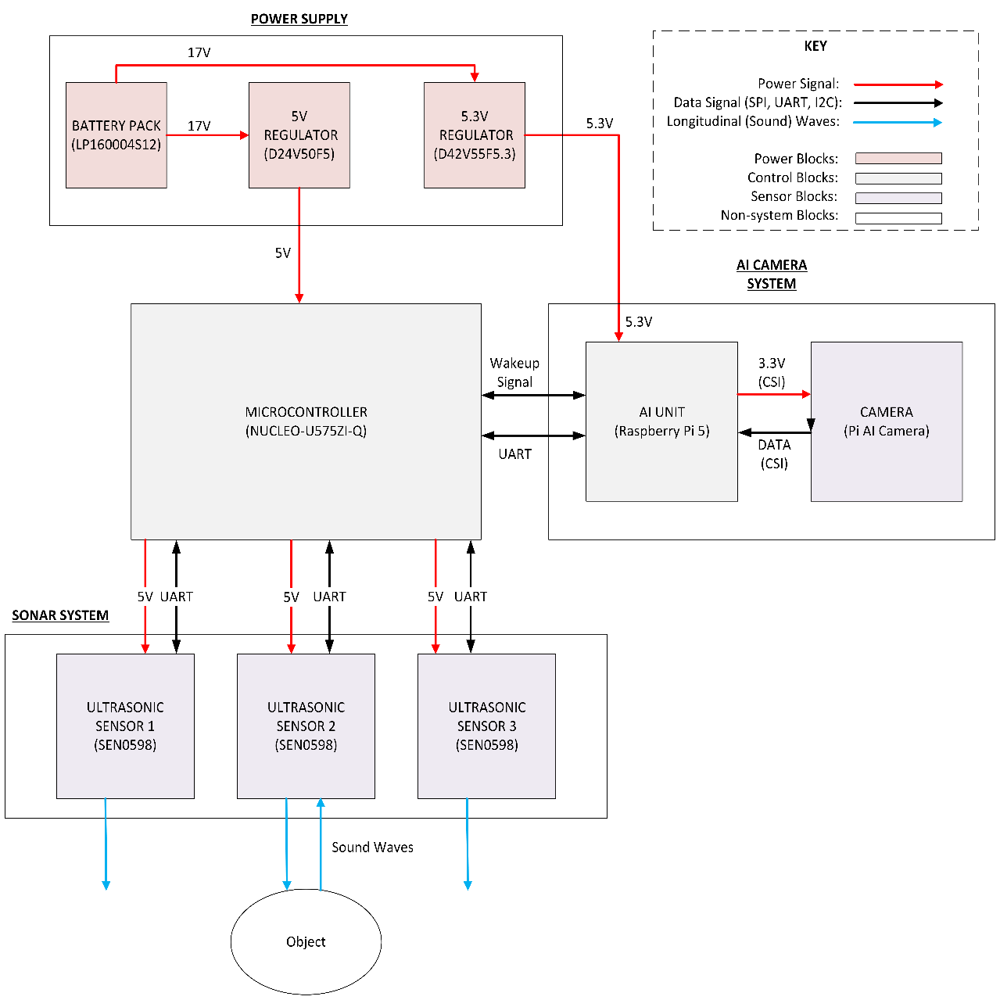
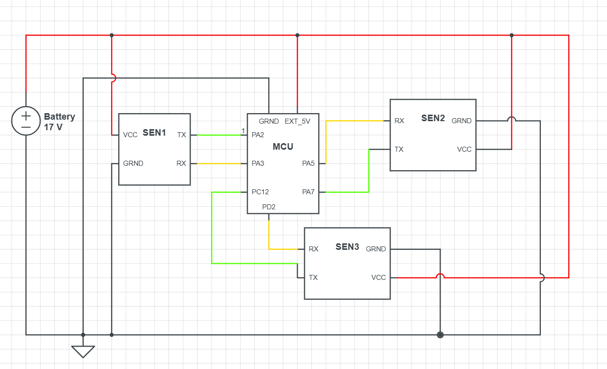

Team of 4 · Group 11Edge AI / YOLO v11Raspberry Pi 5C firmwareSonar
Overview
Over two semesters, our four-person team designed and built a device that detects and identifies plastic debris polluting waterways, made to integrate with existing underwater remotely operated vehicles (ROVs). The system combines four subsystems — power, an ultrasonic (sonar) sensor array, a microcontroller, and an AI object-detection unit — into one detection pipeline. Ultrasonic sensors act as the first level of detection; once an object is sensed, a Raspberry Pi 5 running a vision model classifies it from a live camera feed as plastic or non-plastic, and logs an image plus numerical data that the ROV platform can consume.

System-level block diagram — power, sonar, microcontroller, and Raspberry Pi 5 AI camera subsystems.

Microcontroller subsystem — wiring between the MCU and the ultrasonic sensor channels.
What I built
1) System design & integration lead
Led the overall system design within the four-person team, from initial requirements through final hardware–software integration.
Coordinated how the sonar, microcontroller, AI, and power subsystems hand off to one another so the full detection pipeline behaves as one.
2) Edge-AI detection model
Trained and optimized a custom YOLO-based model for real-time edge deployment on the AI processor.
Tuned the model to a confidence threshold of 85% before it commits to a classification, balancing false positives against missed detections.
On a positive hit, the system saves an image of the object alongside numerical data for the ROV platform.
3) Wake-on-detection firmware
Developed C firmware with a low-power hardware interrupt that wakes the AI unit only when the sonar layer detects an object — keeping the compute-heavy vision stage idle until it's actually needed.
Used the ultrasonic system as the always-on first detection layer, with the camera/AI stage as the second, higher-cost confirmation layer.
Results
Final verification testing of the completed prototype met nearly all user, system, and functional requirements.
The layered sonar-then-vision architecture kept the power-hungry AI stage dormant until needed, supporting the low-power goal for ROV integration.
Remaining unmet requirements were scoped as straightforward future iterations rather than design dead-ends.
85% confidence threshold · sonar-gated AI wake-up
A two-stage pipeline: always-on ultrasonic detection triggers an edge-AI vision model only when an object is present.